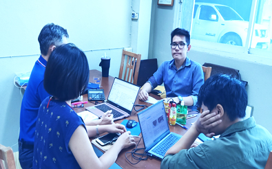

ที่ปรึกษาการตลาดออนไลน์ บริการ นี้ “ จ้าง ” แล้วได้อะไร ?
ที่ปรึกษาการตลาดออนไลน์
ในปีที่ผ่านมา คนไทยมีอัตราเฉลี่ยการใช้งานอินเทอร์เน็ตมากกว่าวันละ 10 นาที ข้อมูลจากสำนักงานพัฒนาธุรกรรมทางอิเล็กทรอนิกส์ นี่คือ จำนวนที่ค่อนข้างมากเกือบจะเป็น อันดับ 1 ของโลกได้เลย
ในขณะที่เราไม่ได้ใช้โทรศัพท์มือถือ เราก็จะเข้าเว็บด้วยการใช้ notebook หรือ laptop ในการต่อเข้าสู่อินเทอร์เน็ตอยู่ดี ไม่ว่าจะเป็นกิจกรรมที่เกี่ยวกับการทำงาน หรือแม้กระทั่ง เล่นเกมออนไลน์ ดูซีรีย์ผ่าน netflix หรือ ชมรายการโทรทัศน์ผ่านทาง Smart TV และ กิจกรรมอื่นๆอีกหลากหลาย
ในจุดนี้ทำให้เห็นว่า พวกเราถูกดึงดูดให้ผูกติดอยู่กับโลกดิจิทัล ซึ่งหมายความว่า โอกาสทางธุรกิจของหลากหลายบริษัท ก็จำเป็นจะต้องเปลี่ยนมาเป็นรูปแบบออนไลน์อย่างทุกวันนี้ เช่นกัน
ปัญหา คือ การตลาดออนไลน์ที่กำลังเป็นกระแส มันมีการเปลี่ยนแปลงอยู่ตลอดเวลา ธุรกิจหรือแม้กระทั่งตัวเราเอง จะตามเทรนด์พวกนี้ให้ทัน ได้อย่างไร ?
เท่านั้นยังไม่พอ มีความพยายามที่หลากหลายบริษัท รวมถึงตัวคุณเอง ในการทำการตลาดออนไลน์ด้วยความพยายามอย่างเต็มที่ แต่...ใครจะรู้ว่า คู่แข่งของคุณก็กำลังทำแบบนั้นอยู่เหมือนกันหรือเปล่า
มนุษย์เรานั้น ชอบคิดสิ่งใหม่ๆ กลยุทธ์การตลาดต่างๆนานา เพื่อทำให้เกิดผลกำไร ประสบความสำเร็จในการประกอบกิจการ
แต่ก็อย่าเพิ่งหงุดหงิดไป เพราะเรื่องราวที่เป็นปัญหาเหล่านี้ ที่ปรึกษาการตลาดออนไลน์สามารถช่วยคุณในการอัพเกรดกลยุทธ์การตลาดออนไลน์ ได้อย่างแน่นอน
5 วิธีที่ ที่ปรึกษาการตลาดออนไลน์ สามารถช่วยคุณพัฒนาให้กิจการใหญ่โตและก้าวหน้าได้
ที่ปรึกษาการตลาดออนไลน์จะสามารถช่วยให้ธุรกิจเติบโต ด้วยกลยุทธ์และการวางแผน สิ่งนี้ คือ เรื่องสำคัญที่เป็นจรรยาบรรณของนักการตลาด ผู้ซึ่งต้องทุ่มเทสรรพกำลัง และ ความพยายามในการวางแผน ออกแบบแคมเปญทางการตลาด
ในทางสถิติแล้ว โครงการ หรือ Project ที่มีนักการตลาดเข้ามาเป็นที่ปรึกษาจะมีเปอร์เซ็นต์ที่ประสบความสำเร็จสูงถึง 356% จากรายงาน
และนี่คือสิ่งที่ที่ปรึกษาการตลาดออนไลน์สามารถช่วยคุณได้

1. ช่วยพัฒนากลยุทธ์การตลาดออนไลน์ที่มีประสิทธิภาพ
ที่ปรึกษาต้องสามารถรวบรวมรายละเอียด และ เสนอกลยุทธ์การตลาดออนไลน์ที่สามารถปฏิบัติได้จริง โดยอิงตามรูปแบบพื้นฐานของวัตถุประสงค์ของธุรกิจของคุณได้ พวกเขาต้องทำกิจกรรมต่างๆเหล่านี้ด้วยความพิถีพิถัน ลงรายละเอียดอย่างเฉพาะเจาะจง ด้วยการวิเคราะห์ตำแหน่งทางธุรกิจของคุณ รวมทั้งกลุ่มลูกค้าเป้าหมายหลักด้วย
สิ่งนี้ดูไปแล้วก็คล้ายกับ การเริ่มต้นทำ SWOT analysis ซึ่งจะทำให้คุณเห็นถึง Strength จุดแข็งของธุรกิจ Weakness จุดอ่อนของธุรกิจ Opportunity โอกาสทางธุรกิจ และ Threat ภัยคุกคามที่อาจจะเกิดกับธุรกิจของคุณ มันจะเป็นเครื่องมือที่ช่วยให้คุณเข้าใจเชิงลึกได้เป็นอย่างดี ว่าธุรกิจของคุณจะมีการดำเนินกิจการไปในรูปแบบใด ความมีประสิทธิภาพของการตลาดของธุรกิจคุณ ตำแหน่งทางการตลาดเมื่อเทียบกับคู่แข่ง และ อื่นๆ
การวิเคราะห์กลุ่มลูกค้าเป้าหมาย เปรียบได้กับผลลัพธ์ในการสร้าง Customer Persona หรือ ลูกค้าในอุดมคติ ของธุรกิจ ในส่วนนี้ ที่ปรึกษาจะต้องคิดให้ออกว่า วิธีที่ดีที่สุด ที่จะเข้าถึงกลุ่มลูกค้าผ่านช่องทางการตลาดออนไลน์ จะต้องเป็นไปในรูปแบบไหน รวมถึง จะสื่อสารไปยังกลุ่มลูกค้ากลุ่มนั้นผ่านช่องทางไหน
แชร์เนื้อหาข้อมูลที่ปรึกษาจะต้องนำมันมารวบรวมเพื่อตัดสินใจ และ วางกลยุทธ์ที่ครอบคลุม เลือกช่องทางหรือแพลตฟอร์ม platform ให้ตรงกับกลุ่มเป้าหมาย และ กำหนดชุดของรายการการดำเนินกิจกรรมทางการตลาดต่างๆ รวมถึง วิธีในการช่วยเหลือให้ธุรกิจก้าวหน้าและเจริญเติบโตมากขึ้น
2. สร้างกลยุทธ์ด้านการขายที่สามารถปิดการขายเพื่อสร้างยอดขายให้ได้มากที่สุด
เมื่อคุณต้องการที่จะเพิ่มยอดขาย หรือ สร้างฐานลูกค้าให้มากกว่าเดิม ที่ปรึกษาด้านการตลาดออนไลน์ต้องสามารถช่วยคุณในการวางกลยุทธ์ด้านการโฆษณาด้วย
การซื้อโฆษณาออนไลน์ เพื่อสะสมฐานลูกค้า และ เพิ่มยอดขาย ด้วยเงินทุกบาททุกสตางค์ที่คุณลงทุนไปกับงบประมาณการซื้อโฆษณาแบบออนไลน์ ควรจะได้ยอดขายกลับมาเป็น 2 เท่า ตัวอย่าง เช่น เมื่อคุณซื้อโฆษณา Google Ads เป็นจำนวนเงิน 1 บาทก็ควรจะสร้างยอดขาย หรือ Revenue ได้เป็นเงิน 2 บาทให้กับธุรกิจ
จากตัวอย่าง Google ไม่ใช่เพียงทางเลือกเดียวในการทำโฆษณาสำหรับคุณ อย่างไรก็ตาม ที่ปรึกษาจะต้องนำเสนอ รวมถึง ตัดสินใจให้ได้ว่าช่องทางสำหรับการโฆษณาไหนที่สามารถทำให้คุ้มค่ากับการลงทุนมากที่สุด จะเลือกใช้ Google หรือ การยิงโฆษณาใน Social Media หรือจะเป็น โฆษณาแบบวีดีโอที่ขึ้นมาระหว่างลูกค้ากำลังดู YouTube
เมื่อมีการปรึกษาและตัดสินใจแล้วว่าช่องทางต่างๆที่จะลงงบโฆษณาลงไป เพื่อนำเสนอแคมเปญโฆษณาที่ประสบความสำเร็จ จำเป็นต้องพิจารณาในเรื่องของการแบ่งกลุ่มลูกค้าเป้าหมาย หรือ segmentation รวมถึ งปัจจัยอื่นๆ อย่างเช่น คำค้นหา ระยะเวลาของการปล่อยโฆษณาออกไป รวมถึง งบประมาณการซื้อโฆษณาเหล่านั้นด้วย
ที่ปรึกษาต้องสามารถวางแผนที่ทำให้แคมเปญโฆษณามีผลตอบรับมากที่สุดตั้งแต่เริ่มต้นจนจบแคมเปญ
3. วางแผนวิธีการวัดผลได้อย่างมีประสิทธิภาพ
ตอนนี้คุณน่าจะเริ่มพอมองเห็นไอเดียบางอย่าง ว่า เป้าหมายทางการตลาดของคุณคืออะไร แต่คุณจะรู้ได้อย่างไรว่า กิจกรรมต่างๆที่คุณกำลังทำอยู่นี้ จะนำพาไปสู่เป้าหมายที่คุณตั้งไว้ได้จริงๆ
ที่ปรึกษาด้านการตลาดออนไลน์จะต้องสามารถชี้เป้าหมาย เป็นผู้นำทางให้กับคุณได้ ในหัวข้อนี้หมายความว่า พวกเขาจะต้องนำเสนอ ตัวชี้วัด หรือ วิธีวัดผล เพื่อใช้ในการตรวจสอบกิจกรรมต่างๆทางด้านการตลาดที่กำลังดำเนินอยู่ให้เหมาะสมกับวัตถุประสงค์ของธุรกิจของคุณ และ เป็นไปตามกลยุทธ์ที่วางไว้
พวกเขาจะต้องช่วยสร้างระบบซึ่งคุณสามารถที่จะวัดผลและเห็นรายงานความก้าวหน้าของโครงการของคุณอยู่ตลอดเวลา และ พวกเขายังจะต้องสามารถ แนะนำเครื่องมือที่ใช้ในการวิเคราะห์ หรือ โปรแกรมต่างๆที่จะมาอำนวยความสะดวกในการวัดผลให้เหมาะสมได้ด้วย
สิ่งต่างๆเหล่านี้ จะช่วยคุณในการติดตามความก้าวหน้าของธุรกิจ รวมถึง ความเปลี่ยนแปลงต่างๆที่เกิดขึ้น สิ่งเหล่านี้ล้วนมีความจำเป็นอย่างยิ่งในการทำธุรกิจ

4. แนะนำไอเดียใหม่ๆรวมถึงนวัตกรรม
ความสุดยอดอย่างหนึ่ง ของการทำงานกับ ที่ปรึกษาด้านการตลาดดิจิทัล ในยุคนี้ นั่นคือ พวกเขามาพร้อม ความรู้ใหม่ๆ รวมถึงมุมมองที่ไม่มีอคติกับการทำธุรกิจของคุณ
ด้วยความเป็นมืออาชีพ และ เชี่ยวชาญในเรื่องการตลาดออนไลน์ พวกเขาจะมีความรู้เท่าทันยุคสมัย มีข้อมูลที่อัพเดตตลอดเวลา และ ติดตามกระแสและเทรนด์ต่างๆได้อย่างสม่ำเสมอ ดังนั้น พวกเขาจึงสามารถนำเสนอไอเดียที่ตรงเป้าเข้าถึง และ สามารถขับเคลื่อนให้ธุรกิจของคุณก้าวหน้าได้อย่างชัดเจนและรวดเร็ว
ตัวอย่าง เช่น เทรนของการตลาดออนไลน์ล่าสุดในปีนี้ นั่นก็ คือ
- การทำโฆษณาออนไลน์แบบอัตโนมัติด้วยการใช้โปรแกรมคอมพิวเตอร์
-การมาถึงของ วิธีที่ผู้บริโภคใช้ในการค้นหาข้อมูลสินค้าและบริการ เช่น ค้นหาด้วยเสียง หรือ ค้นหาด้วยภาพ
-รูปแบบที่เปลี่ยนแปลงไปของ Content Marketing ที่จะต้องสามารถโต้ตอบกับลูกค้าได้อย่างเป็นธรรมชาติ
ถ้าคุณกำลังมองหาบางสิ่งบางอย่าง ที่แตกต่างไม่เหมือนใคร แบบของไอเดียด้านการตลาดออนไลน์ที่ได้กล่าวไปนี้ คุณก็จะสามารถก้าวล้ำนำหน้าคู่แข่งของคุณได้อยู่เสมอ ตรงจุดนี้เอง ที่ปรึกษาการตลาดออนไลน์จะสามารถช่วยเหลือได้มาก
5. ขับเคลื่อนธุรกิจให้ก้าวหน้าไปในหลากหลายช่องทาง
เป็นที่รู้กันดีว่า ปัจจุบันผู้บริโภคมีการใช้ช่องทางหลากหลาย ไม่ใช่เพียงแต่ออนไลน์อย่างเดียว หรือ ช่องทางปกติ ที่เรียกว่าออฟไลน์ อย่างใดอย่างหนึ่ง แต่ผู้บริโภคใช้ช่องทางเหล่านี้ ผสมผสานกัน เพื่อให้เข้ากับพฤติกรรมของพวกเขา ดังนั้น มีความจำเป็นอย่างยิ่ง สำหรับการทำการตลาดออนไลน์ในปัจจุบันที่จำเป็นจะต้องนำเสนอแบรนด์ หรือ ความเป็นตัวตนของธุรกิจของคุณไปในหลากหลายช่องทางที่ลูกค้าสามารถเข้าถึงได้ ก่อนที่ลูกค้าจะตัดสินใจซื้อด้วยซ้ำ ยังไม่พอ คุณสามารถที่จะเข้าถึงกลุ่มลูกค้าได้มากขึ้น เมื่อคุณเลือกใช้ช่องทางได้ถูกและสามารถใช้ช่องทางได้หลากหลาย
ที่ปรึกษาด้านการตลาดออนไลน์ ตัวจริง ต้องมีประสบการณ์ในหลากหลายแพลตฟอร์ม รวมถึง สามารถที่จะนำเสนอกิจกรรมทางการตลาดได้หลากหลายรูปแบบ เพื่อให้เหมาะสมกับแต่ละช่องทาง ไม่ว่าจะเป็นการทำอันดับในการค้นหาบน Google ที่เรียกว่า SEO หรือ การทำโฆษณาผ่านการส่งจดหมายอิเล็กทรอนิกส์หรืออีเมล Email Marketing หรือ แม้กระทั่ง การสื่อสารไปยังช่องทาง Social Media ต่างๆเช่น Tiktok Instagram Twitter LINE และอื่นๆอีกมากมาย
ดังนั้น พวกเขาก็เลยสามารถที่จะสร้างแคมเปญทางการตลาดได้อย่างต่อเนื่องและสม่ำเสมอ เพื่อให้เห็นผลรับจากช่องทางอันหลากหลายที่ใช้ทำการตลาดนี้ นอกจากนั้น ก็จะทำให้คุณเห็นได้ว่าช่องทางต่างๆที่มีมากมาย ช่องทางไหนที่เหมาะสมกับการสื่อสารกับกลุ่มลูกค้าเป้าหมายได้ดีที่สุด

เมื่อตัดสินใจจ้างที่ปรึกษาการตลาดออนไลน์แล้วควรจะเริ่มต้นอะไรก่อนดี
ถ้าคุณต้องการที่จะได้ผลลัพท์มากที่สุด จากการทำงานของที่ปรึกษาการตลาดออนไลน์ มี 4-5 ข้อที่คุณควรจะต้องเรียนรู้และเตรียมตัวไว้ก่อนล่วงหน้า
1. มีความชัดเจนในวัตถุประสงค์และสิ่งที่คาดหวังไว้
ไม่ว่าจะเป็นที่ปรึกษาด้านการตลาดออนไลน์คนไหนก็ตาม ก็มีคุณค่าและมีฝีมือเพียงพอที่จะทำให้คุณมีความสุข ธุรกิจของคุณเจริญก้าวหน้าได้แน่นอน เพียงแต่ว่า สิ่งเหล่านี้จะเกิดขึ้นได้ก็ต่อเมื่อ… คุณรู้อย่างแน่ชัดว่า ต้องการให้พวกเขาทำอะไร และ มีความชัดเจนในเรื่องของเป้าหมายและความสำเร็จที่ต้องการตั้งแต่แรกเริ่ม
เมื่อมีการตกลงสัญญาว่า จ้าง ให้ที่ปรึกษาเริ่มงาน คุณเองควรจะต้องทำงาน ร่วมกับ ที่ปรึกษาอย่างใกล้ชิดในช่วงแรกอาจจะประมาณ 1-2 เดือน หรือ ตามระยะเวลาของโครงการที่ตกลงกันไว้ สิ่งที่จำเป็นจะต้องทำความเข้าใจให้ตรงกัน นั่นก็คือ คุณคาดหวังอะไรบ้างกับโครงการหรือแคมเปญทางการตลาดครั้งนี้ และ คุณต้องระบุให้ชัดเจนว่า กิจกรรมในการให้คำปรึกษาจะเกิดขึ้นบ่อยครั้งแค่ไหน เพื่อให้คุณบรรลุเป้าหมาย จากนั้นที่ปรึกษาก็จะทำในสิ่งที่เขาถนัดที่สุด นั่นคือ ทำให้ทุกอย่างที่คุณตั้งเป้าไว้เกิดขึ้นจริง
เพื่อให้คุณมองเห็นภาพ ตัวอย่าง เช่น คุณอาจจะต้องการคำปรึกษาเป็นจำนวน 6 ครั้ง เพราะคุณคาดหวังว่า ที่ปรึกษาจะสามารถทำให้จำนวนที่พบกันและทำงานร่วมกันนี้ สามารถเพิ่มฐานลูกค้าให้คุณได้มากขึ้น 10 เปอร์เซ็นต์ เมื่อคุณมีความชัดเจน เห็นชัดจนออกมาเป็นตัวเลขได้ขนาดนี้ ก็มีความเป็นไปได้สูง ที่ที่ปรึกษาจะสามารถช่วยคุณในการบรรลุความคาดหวัง
- อะไรบ้าง ที่คุณควรตั้งเป้าและคาดหวังที่จะได้รับ
- กิจกรรมทางการตลาดไหนบ้าง ที่ควรให้ความสำคัญก่อนเป็นอย่างแรก และ อย่างไหนบ้างที่สามารถเก็บไว้ทำภายหลังได้
- วิธีการสื่อสารกับกลุ่มลูกค้าเป้าหมายที่มีประสิทธิภาพและเหมาะสมกับธุรกิจของคุณ
ความคืบหน้าของโครงการหรือแคมเปญการตลาดคุณจะสามารถได้รับรายงานเหล่านี้บ่อยแค่ไหน
2. ให้สิทธิ์ในการเข้าถึงและเข้าใจธุรกิจ
บางครั้ง ที่ปรึกษาด้านการตลาดออนไลน์จำเป็นจะต้องมีสิทธิ์ในการเข้าถึงบัญชีต่างๆในโลกออนไลน์ของคุณ เพื่อที่จะเข้าไปตรวจสอบหรือทำงานบางอย่างให้มีประสิทธิภาพมากขึ้น สิ่งนี้เป็นส่วนสำคัญมากในการให้คำปรึกษา และ คุณก็ต้องให้ความเชื่อมั่นกับที่ปรึกษาที่คุณตัดสินใจจ้างมาด้วย
อย่างแรก ที่พวกเขาต้องการอาจจะเป็นเรื่องของ การดูรายงานต่างๆเกี่ยวกับกลุ่มลูกค้าเป้าหมาย และ ข้อมูลที่คุณเก็บสะสมไว้ในรูปแบบดิจิทัล คุณควรที่จะให้สิทธิ์ในการเข้าถึงข้อมูลเหล่านี้ด้วย เช่น Google analytics บัญชีการเข้าถึงโฆษณาใน facebook หรือ Social Media อื่นๆ
เท่านั้นยังไม่พอ เขาอาจจะต้องการเอกสารต่างๆที่มีความเกี่ยวข้องกับธุรกิจของคุณ และ อาจจะเป็นประโยชน์ในการวางแผนกลยุทธ์ทางการตลาด เช่น งานวิจัยการตลาดของคุณ การวิเคราะห์ตลาดของกลุ่มอุตสาหกรรมของคุณ ไกด์ไลน์ guideline ในการสร้างแบรนด์ หรือ branding ของธุรกิจของคุณ รวมถึง วิสัยทัศน์และความคาดหวังของธุรกิจ เท่าที่จะสามารถแชร์ให้ได้
โดยปกติแล้ว คุณก็ควรจะเปิดเผยเฉพาะส่วนที่คุณสบายใจ และเห็นว่า น่าจะช่วยในการทำการตลาดได้ดีขึ้น วัตถุประสงค์ของการแบ่งปันหรือนำข้อมูลเหล่านี้ ก็เพื่อที่จะให้ที่ปรึกษาสามารถเรียนรู้ทำความเข้าใจ ระบบ กระบวนการ การทำงาน และ ธุรกิจของคุณมากเท่าที่จะมากได้ สิ่งเหล่านี้จะส่งผลในการสร้างรูปแบบของกลยุทธ์ทางการตลาดและการตัดสินใจที่ดี
การวัดผลลัพธ์จากการลงทุนในการ ใช้บริการ หรือ การจ้าง ที่ปรึกษาด้านการตลาดออนไลน์
ROI : Return on Investment หมายถึง ผลลัพธ์ที่เกิดขึ้นจากการลงทุน ซึ่งอ้างอิงไปถึง ผลกำไรที่คุณจะได้รับเพิ่มมากขึ้น และ มันมีความสัมพันธ์ไปกับงบประมาณที่คุณจะลงทุนลงไป ดังนั้น ถ้าคุณสามารถคำนวณผลลัพธ์จากการลงทุนครั้งนี้ได้ คุณควรจะใช้สูตรนี้ ซึ่งเป็นที่นิยมและใช้กันในหลากหลายโครงการของการทำการตลาดออนไลน์
{((จำนวนของผู้คาดหวังที่อาจจะเป็นลูกค้าในอนาคต x อัตราส่วนของการเปลี่ยนจากผู้คาดหวังเป็นลูกค้า x ยอดขายเฉลี่ย) - ต้นทุนหรืองบประมาณในการซื้อโฆษณา) / ต้นทุนหรืองบประมาณในการซื้อโฆษณา} x 100
จากเบื้องต้น ขออธิบายคำศัพท์ต่างๆ
- จำนวนของผู้คาดหวัง คือ จากแคมเปญการตลาดนี้ คุณจะสามารถสร้างจำนวนผู้คาดหวังที่ อาจจะ เปลี่ยนเป็นลูกค้าของคุณได้มากน้อยเท่าไหร่
- อัตราส่วนของการเปลี่ยนจากผู้คาดหวังเป็นลูกค้า คือ มีจำนวนผู้คาดหวังกี่คนที่กลายมาเป็นลูกค้าของคุณ
- ยอดขายเฉลี่ย คือ ราคาเฉลี่ยของสินค้าหรือบริการของคุณ
- ต้นทุนหรืองบประมาณในการซื้อโฆษณา คือ ต้นทุนทั้งหมดที่คุณมีลงทุนไป สิ่งนี้ต้องรวมงบประมาณของการซื้อโฆษณา ต้นทุนการผลิตสินค้า หรือ การบริการ และ ค่าดำเนินกิจกรรมทางการตลาดต่างๆรวมถึงค่าบริการของที่ปรึกษาการตลาดออนไลน์เข้าไปด้วย
ในขณะที่คุณใช้สูตรนี้ เพื่อคำนวณผลลัพธ์ที่ได้จากการลงทุน หรือ ROI ควรจะคำนึงอยู่เสมอว่า มีตัวแปรบางอย่าง ที่จำเป็นจะต้องทำความเข้าใจ
ตัวอย่าง เช่น แคมเปญการตลาดนี้ สามารถสร้างกลุ่มผู้คาดหวังได้มากมาย แต่ทีมงานขายของคุณอาจจะไม่ประสบความสำเร็จในการเปลี่ยนกลุ่มผู้คาดหวังนี้มาเป็นลูกค้าได้ ดังนั้น หมายความว่า คุณกำลังล้มเหลวในการเปลี่ยนกลุ่มผู้คาดหวังให้กลายเป็นลูกค้า นั่นเอง สิ่งนี้จะส่งผลกระทบต่อค่า ROI
นอกจากนั้น สิ่งที่คุณต้องการจะได้ จากแคมเปญด้านการตลาดออนไลน์ ขึ้นอยู่กับว่า วัตถุประสงค์ที่คุณสร้างมันขึ้นมา คืออะไรกันแน่ อย่างในบางกรณี คุณอาจจะต้องคิดแคมเปญในการสร้างความสัมพันธ์ และ เป็นที่รู้จักในกลุ่มของลูกค้าให้เป็นวัตถุประสงค์ของแคมเปญนี้ มากกว่าที่จะ เน้นเรื่องจำนวนเงินที่จะได้รับ
บางที คุณก็ควรวัดค่า ROI การให้บริการของ ที่ปรึกษาการตลาดออนไลน์ ตามสูตรที่ได้บอกไปด้านบนนี้ เพื่อที่คุณจะสามารถรู้ได้ว่า พวกเขาช่วยให้คุณประสบความสำเร็จในการสร้างแบรนด์ให้เป็นที่รู้จักได้หรือไม่ ทำให้คุณถูกค้นพบใน Google ในคำที่ลูกค้าค้นหา ในตำแหน่งสูงๆในหน้าแรกของ Google หรือไม่ เพิ่มยอดขายด้วยการพัฒนา วิธีการปิดการขาย ให้กับทีมเซลล์ในช่องทาง เช่นการแชทไลน์ LINE
อย่าลืมว่า การคำนวณด้วย สูตร ผลลัพธ์จากการลงทุน หรือ ROI นี้ ไม่จำเป็นเสมอไป ที่จะต้องคิดถึงเงินเป็นหลัก คุณอาจจะประสบความสำเร็จอย่างยอดเยี่ยมในด้านอื่นๆ กับ การทำแคมเปญการตลาดครั้งนี้และ มันไปส่งผลให้เกิดยอดขายในภายหลัง ก็เป็นได้ หรือ มันอาจจะทำให้คุณสามารถรักษาฐานลูกค้า หรือ กลุ่มลูกค้าเก่าของคุณได้เหนียวแน่นมากขึ้น ทำให้แบรนด์ของคุณเป็นเจ้าตลาด หรือ เป็น Top of mind ที่ถ้าลูกค้านึกถึงธุรกิจหรือบริการนี้ ก็จะมีคุณโผล่ขึ้นมาในสมองของพวกเขาทันที
5 ข้อแนะนำ เพื่อใช้ในการหาที่ปรึกษาการตลาดออนไลน์ให้เหมาะกับธุรกิจของคุณ
การจ้างที่ปรึกษาการตลาดออนไลน์ หรือ การเลือกใช้บริการนี้ คือ การลงทุนให้กับอนาคตของกิจการของคุณ และ อาจเป็นสิ่งเดียวที่สามารถทำให้ธุรกิจของคุณพุ่งทะยานก้าวหน้าไปในอุตสาหกรรมนี้ได้
ดังนั้น มันก็เป็นเรื่องที่จำเป็นมากๆ ที่คุณควรจะหาคนที่ใช่ ดังนั้นต่อจากนี้ไป คือ คุณลักษณะที่คุณควรจะต้องหาให้พบในตัวของที่ปรึกษาเหล่านั้น
1. มีความเชี่ยวชาญและชำนาญตรงตามความต้องการของธุรกิจ
การใช้บริการ หรือ เลือก ที่ปรึกษาการตลาดออนไลน์ ด้วยความเชี่ยวชาญและชำนาญของพวกเขาที่เหมาะสมกับความต้องการของธุรกิจของคุณ เป็นเรื่องสำคัญ ถ้าคุณกำลังมองหาบางอย่างที่เฉพาะเจาะจง เช่น การทำการตลาดด้วยคอนเทนต์ หรือ Content Marketing คุณควรจะต้องแน่ใจว่า ที่ปรึกษาคนนั้นจะมีความชำนาญในด้านนี้
มันจะยิ่งเป็นผลดีกับธุรกิจของคุณ ถ้าคุณสามารถหาที่ปรึกษาที่มีความเชี่ยวชาญและชำนาญที่เคยทำงานในธุรกิจแบบเดียวกับคุณมาก่อน เพราะคุณสามารถเห็นว่า ลูกค้าของที่ปรึกษาคนนี้ มีผลลัพธ์อย่างไร ตัวอย่าง เช่น ถ้าคุณต้องการจะสร้างช่องทางอีคอมเมิร์ซ e-commerce ของตัวเอง คุณก็ควรจะมองหาที่ปรึกษา ที่สามารถบอกถึงยอดขายของลูกค้าก่อนหน้า ที่ได้จากร้านค้าออนไลน์แบบอีคอมเมิร์ซ และ เปอร์เซ็นต์ของการเติบโตของยอดขายในช่องทางนั้นได้
มากไปกว่านั้น คุณก็ควรจะตรวจสอบลงไปในรายละเอียด เรื่องของ ขนาด จำนวน และ รูปแบบของธุรกิจที่ที่ปรึกษาคนนั้น เคยทำงานมาก่อน เพราะนี่คือ อีกหนึ่งตัวชี้วัด ที่จะบอกว่าเขาคนนั้น สามารถช่วยเหลือคุณได้มากน้อยแค่ไหน
2. สร้างผลลัพธ์ได้จริง
กลยุทธ์ของเขาประสบความสำเร็จหรือไม่ เขาสามารถบรรลุเป้าหมายตามวัตถุประสงค์ และ ช่วยให้ประสบความสำเร็จได้หรือเปล่า
มี 2-3 วิธี ที่คุณสามารถจะรู้เรื่องเหล่านี้ได้ นั่นคือ คุณสามารถขอตัวอย่าง หรือ ค้นคว้าผลงานของที่ปรึกษาคนนั้น ในโลกออนไลน์ หรือ ขอตัวอย่างที่เป็นแคมเปญการตลาดที่ประสบความสำเร็จ และ เกี่ยวพันหรือคล้ายคลึงกับธุรกิจของคุณ ตั้งแต่ตอนที่คุณเริ่มต้นสัมภาษณ์เขา
คุณยังสามารถที่จะรับรู้ได้จากความสามารถในการที่เขาทำการตลาดออนไลน์ให้กับตัวเขาเองหรือบริษัทของเขาเพราะถ้าเขาไม่เก่งพอในโลกออนไลน์คุณก็จะไม่มีวันได้เห็นผลงานของเขาอย่างแน่นอนดังนั้นมันก็ทำให้คิดได้ว่าเขาไม่น่าจะใช่ตัวจริงที่จะเข้ามาช่วยเหลือธุรกิจของคุณได้เช่นกัน
3. ความน่าเชื่อถือ
คุณรู้หรือไม่ว่า... ผมมีทักษะด้าน บาสเก็ตบอล ในระดับประเทศ
ผมล้อเล่น..!
ประเด็น คือ ผมต้องการทำให้คุณเห็นว่า ไม่ว่าใครก็ตามสามารถที่จะอ้างได้ว่าพวกเขาเก่ง คุณจะสามารถพิสูจน์ได้อย่างไรว่า ที่ปรึกษาการตลาดออนไลน์คนนี้ เก่งจริงๆ และ น่าเชื่อถืออย่างที่เขาอ้าง
มีใครที่สามารถรับรองเขาได้บ้าง หา รีวิว คำนิยมต่างๆ หรือ ถามไปถึงบุคคลอื่นๆที่เกี่ยวข้องกับเขาในโลกออนไลน์ ก็ได้
การได้รับ การรับรอง ก็สามารถที่จะพิสูจน์ได้ว่า ที่ปรึกษาคนนี้มีความสามารถ ระดับหนึ่ง หรือ เพียงพอที่จะทำตามที่เขาพูดได้ ตัวอย่าง เช่น เขาอาจจะมีประกาศนียบัตรจาก Google หรือ องค์กรอื่นๆรับรองเขาเหล่านั้น
4. เป็นผู้ที่ถ่ายทอดและให้ความรู้ได้ดี
หนึ่งในกุญแจหลักสำคัญ ที่เป็นความรับผิดชอบของที่ปรึกษาการตลาดออนไลน์ นั่นคือ การสื่อสาร และ ให้ความรู้ เพื่อต่อยอดให้คุณประสบความสำเร็จได้อย่างต่อเนื่อง มากไปกว่านั้น พวกเขาก็ควรที่จะสามารถตอบคำถามต่างๆให้กับคุณได้ รวมถึง ให้คำแนะนำที่มีหลักการเหตุผล ในขณะที่มีการทำงานร่วมกัน
สิ่งนี้ หมายความว่า พวกเขามีความรู้ความเข้าใจ เชิงลึก ในงานด้านการตลาดออนไลน์ และ มีประสบการณ์อย่างชัดเจน ในกรณีต่างๆ ที่อาจจะมีประสบการณ์มาแล้วอย่างโชกโชน ดังนั้น มันก็จะเป็นการดี ถ้าคุณสามารถได้ร่วมงานกับที่ปรึกษาที่มีประสบการณ์ หรือ อยู่ในสนามของธุรกิจนี้ มาแล้วอย่างยาวนาน
เท่านั้นยังไม่พอ พวกเขาควรจะต้อง เป็นคนที่ เรียนรู้อยู่ตลอดเวลา มีเรื่องราวใหม่ๆมาอัพเดท สามารถเข้าถึงเทรนล่าสุด และ ที่สำคัญมีความเข้าใจและมั่นใจพร้อมที่จะนำความรู้ด้านการตลาดออนไลน์เหล่านั้น มาต่อยอดถ่ายทอดให้กับคุณ ดังนั้น เมื่อมาถึงตรงจุดนี้ ก็อยากจะแนะนำ อันดับ 1 ของที่ปรึกษาการตลาดออนไลน์ ให้คุณได้รู้จัก
อาจารย์แชมป์ ธิติพล เทียมจันทร์ ทำงานด้านอีคอมเมิร์ซ และ ดิจิทัลมาร์เก็ตติ้ง มามากกว่า 18 ปี
เป็นเบื้องหลังการทำงานด้านการตลาดออนไลน์ ให้กับ บริษัทเอกชน มากกว่า 40 บริษัท ในกว่า 10 อุตสาหกรรม เช่น การเงินการธนาคาร สุขภาพและความงาม ยานยนต์ อสังหาริมทรัพย์ ค้าปลีก การศึกษา อาหารและเครื่องดื่ม
อีกทั้งยังได้รับเชิญให้เข้าร่วมช่วยงานในโครงการของทางภาครัฐอีกมากกว่า 30 โครงการ
หากการพูดถึงประสบการณ์จริงเหล่านี้ อาจทำให้รู้สึกว่าเกินจริงและไกลตัวคุณไป
เอาเป็นว่า ถ้าตอนนี้ ถ้าคุณกำลังมองหา ที่ปรึกษาการตลาดออนไลน์ ที่ปรึกษาการตลาด
Digital marketing Consultant แล้วใช้ Google ในการค้นหา การันตีได้ว่า Google จะเลือกผลงานต่างๆของ อาจารย์แชมป์ ธิติพล เทียมจันทร์ มาเป็นผลลัพธ์ให้คุณดูในหน้าแรกแน่นอน
ดังนั้น คุณพร้อมไหม ในการรับคำปรึกษาด้านการตลาดออนไลน์
ติดต่อ โทร. 0631979894 หรือ ทักไลน์ มาที่ @brandingchamp

5. คุณเข้ากันได้ดีแค่ไหน
คุณและที่ปรึกษาการตลาดออนไลน์ของคุณ มีวิสัยทัศน์ตรงกันในการที่จะนำพาธุรกิจไปสู่เป้าหมายหรือไม่?
ในช่วงที่คุณกำลังทำความรู้จัก หรือ เข้าใจในตัวที่ปรึกษา จงพยายามรู้จักและมองหาคุณค่าของตัวเขา คุณอาจจะลองถามเขา ด้วยชุดคำถามนี้
- คุณให้ความช่วยเหลือและให้คำปรึกษาลูกค้าในลักษณะธุรกิจเดียวกันนี้อย่างไร ?
- คุณมีความคุ้นเคยกับธุรกิจลักษณะนี้และในอุตสาหกรรมนี้อย่างไร ?
- คุณมีไอเดียเบื้องต้นในการสร้างกลยุทธ์แล้วหรือไม่ ?
- คุณจะให้พวกเรามีส่วนร่วมในกระบวนการการทำงานได้มากน้อยแค่ไหน ?
- จะเกิดอะไรขึ้นถ้ากลยุทธ์มันไม่ประสบความสำเร็จ ?
- คำตอบของพวกเขาอาจจะช่วยให้คุณตัดสินใจได้ถูกต้องในการเลือกที่ปรึกษา
สรุปโดยรวมทั้งหมด
มีหลากหลายเหตุผล ที่คุณอาจจะต้องการ จ้างที่ปรึกษาการตลาดออนไลน์ ตัวอย่าง เช่น ถ้าคุณกำลังติดขัด หรือ พบกับอุปสรรคบางอย่าง ที่ทำให้กลยุทธ์การตลาดที่ใช้อยู่ ไม่ก้าวหน้าไปอย่างที่ควร หรือ คุณไม่สามารถก้าวล้ำนำหน้าคู่แข่งทางธุรกิจของคุณไปได้แม้แต่น้อย
ผู้เชี่ยวชาญด้านการตลาดดิจิทัล สามารถช่วยคุณ ให้มีกลยุทธ์ทางการตลาด และ กลยุทธ์การขายที่จะสามารถขับเคลื่อนให้ธุรกิจเติบโตต่อไปได้ และ พวกเขาก็ยังสามารถนำเสนอไอเดียที่สดใหม่ รวมถึง ช่วยในการเลือกใช้ช่องทางต่างๆที่อาจกลายมาเป็นสื่อหลักที่คุณใช้ในการสื่อสารกับลูกค้า
ตราบเท่าที่ คุณได้พบกับคนดีๆที่คุณคาดหวัง
เมื่อมาถึงตอนที่คุณเลือกที่ปรึกษาสักคน ที่จะมาทำงานร่วมกัน หาคนที่จะสามารถเข้ากันได้กับสิ่งที่คุณคาดหวังไว้ เช่น เมื่อเขาเข้าใจว่าคุณกำลังทำอะไรอยู่ และ มีประสบการณ์แบบเดียวกันนี้มาก่อน รวมถึง มีความชำนาญอย่างมาก นี่แหละ คือ คนที่คุณกำลังมองหา
ติดต่อ โทร. 0631979894 หรือ ทักไลน์ มาที่ @brandingchamp

อีกทั้งยังได้รับเชิญให้เข้าร่วมช่วยงานในโครงการของทางภาครัฐอีกมากกว่า 30 โครงการ
หากการพูดถึงประสบการณ์จริงเหล่านี้ อาจทำให้รู้สึกว่าเกินจริงและไกลตัวคุณไป
เอาเป็นว่า ถ้าตอนนี้ ถ้าคุณกำลังมองหา ที่ปรึกษาการตลาดออนไลน์ ที่ปรึกษาการตลาด Digital marketing Consultant แล้วใช้ Google ในการค้นหา การันตีได้ว่า Google จะเลือกผลงานต่างๆของ อาจารย์แชมป์ ธิติพล เทียมจันทร์ มาเป็นผลลัพธ์ให้คุณดูในหน้าแรกแน่นอน
ดังนั้น คุณพร้อมไหม ในการรับคำปรึกษาด้านการตลาดออนไลน์